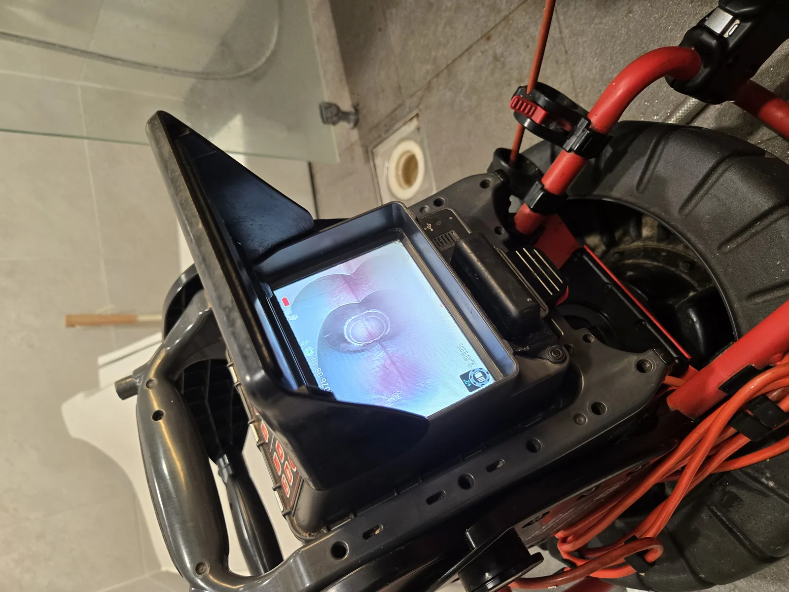
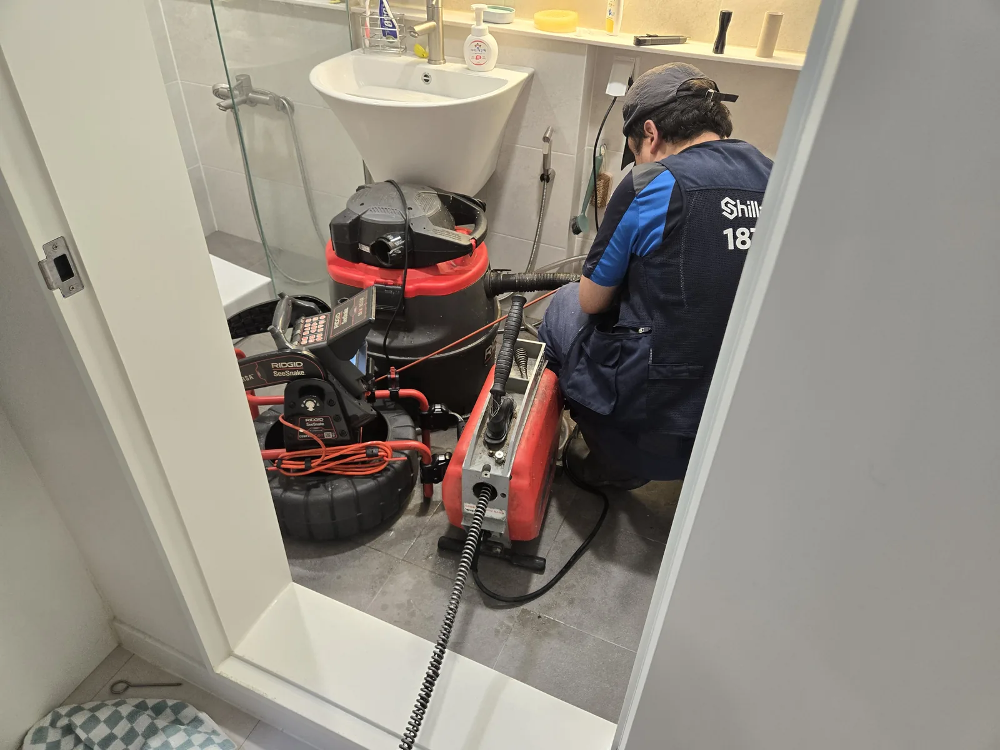

마포구 도화동 변기막힘, 현장 도착 후 진단
이번 도화동 현장은 변기 한 곳만 막힌 상황이 아니었습니다. 두 변기에서 동시에 역류가 나타나, 개별 변기의 이물질뿐 아니라 두 변기가 연결되는 오수관과 정화조 방향까지 확인해야 했습니다. 추가 사용으로 오수가 넘치지 않도록 변기 사용을 중단하고 순서대로 점검을 진행했습니다.
1단계: 증상 확인과 필요한 장비 작업
변기를 분리해 배관 입구를 확보한 뒤 배관내시경을 투입했습니다. 화면으로 배관 내부 상태와 진행 방향을 살피고, 석션과 스프링 관통 작업을 진행했습니다.
두 변기가 동시에 역류한 만큼 변기 주변 작업만으로 끝내지 않고, 연결된 오수관의 흐름과 정화조 상태까지 점검했습니다. 정화조는 수위가 높아 출수관이 물에 가려져 있었으며, 마지막 배수 구간까지 확인하려면 먼저 수위를 낮춰야 하는 상황이었습니다.

2단계: 원인 구간 처리와 정상 작동 확인
먼저 펌프로 정화조의 물을 빼내 수위를 낮추고, 물에 가려져 있던 출수관을 확인할 수 있도록 했습니다. 이후 출수관 마지막 구간에 고압세척 호스를 투입할 수 있도록 배관을 타공해 진입구를 확보했습니다.
확보한 진입구에서 배수 흐름의 반대 방향으로 고압세척 호스를 넣어 작업했습니다. 정화조의 수위를 낮추는 데서 끝내지 않고, 출수관 마지막 구간까지 고압세척을 진행해 최종 통수를 확보했습니다.

작업 결과와 재발 방지 안내
이번 도화동 현장은 변기 두 곳에서 동시에 발생한 역류를 따라 오수관과 정화조, 출수관까지 확인한 사례입니다. 정화조의 물을 펌프로 빼내 수위를 낮추고, 출수관 마지막 구간에서 역방향 고압세척을 진행해 최종 통수를 확보했습니다.
정화조의 물을 빼는 것과 출수관 막힘을 해결하는 것은 별개입니다
이번 작업에서도 펌프로 수위를 낮추는 데서 끝내지 않고 출수관 마지막 구간까지 고압세척을 진행했습니다. 물을 빼낸 직후에는 수위가 낮아져도, 물이 나가는 길에 막힘이 남아 있다면 사용하면서 다시 수위가 높아질 수 있기 때문입니다.
비슷한 증상이 재발하면 정화조 수위만 볼 것이 아니라 출수관으로 물이 원활하게 빠지는지 함께 확인해야 합니다. 정화조 내부 확인과 배관 작업은 관리 담당자나 전문 작업자에게 맡겨주세요.
두 변기에서 함께 증상이 나타나면 연결된 배관을 확인하세요
한 변기를 사용할 때 다른 변기에서 꿀렁거리는 소리가 나거나, 여러 변기의 물 빠짐이 함께 느려지면 증상이 나타난 위치와 시간을 기록해두세요. 이런 변화가 반복되면 개별 변기뿐 아니라 공용 오수관과 정화조 방향까지 점검할 필요가 있습니다.
이미 수위가 올라오는 상태에서 물을 반복해서 내리면 오수가 넘칠 수 있습니다. 사용을 멈추고, 같은 배관을 사용하는 다른 화장실에도 증상이 있는지 확인해 알려주시면 원인 구간을 좁히는 데 도움이 됩니다.
건물 관리 담당자와 작업 내용을 공유해 주세요
여러 화장실이 연결된 배관은 한 곳에서만 관리하기 어렵습니다. 이번에 점검한 구간과 고압세척 위치, 정화조 수위가 높았던 상황을 건물 관리 담당자에게 전달해두면 같은 증상이 발생했을 때 점검에 도움이 됩니다.
정기적인 정화조 관리와 별도로, 배수 속도가 다시 느려지거나 역류가 반복된다면 출수관과 연결 배관의 상태를 점검하는 것이 좋습니다. 반복되는 막힘은 이물질 외에도 배관의 처짐이나 연결부 상태 등이 영향을 줄 수 있어 현장 확인 후 필요한 조치를 판단해야 합니다.
변기에는 물티슈와 음식물을 버리지 마세요
물티슈와 질긴 채소 줄기, 음식물은 변기를 통과하더라도 뒤쪽 오수관에 걸려 쌓일 수 있습니다. 여기에 휴지와 다른 오물이 엉키면 물이 지나가는 통로가 점점 좁아질 수 있으므로 별도로 버리는 것이 좋습니다. 휴지도 한 번에 많은 양을 넣지 않는 습관이 도움이 됩니다.
다만 이번 현장에서 막힘을 일으킨 이물질의 종류를 특정한 것은 아닙니다. 평소 사용 습관과 함께 연결된 배관의 배수 상태를 관리하는 것이 중요합니다.
최종 조치: 정화조 수위 조절 후 출수관 마지막 구간 타공 및 역방향 고압세척으로 최종 통수 확보
현장 방문 전 확인하는 비용과 작업 범위
신라건축설비는 현장 증상과 배관 구조를 확인한 뒤 필요한 작업과 예상 비용을 안내합니다. 단순 관통으로 해결되는지, 배관내시경·석션·고압세척 또는 변기 탈거가 필요한지는 현장 상태에 따라 달라집니다. 출장비와 야간 작업비, 추가 장비 비용이 발생할 수 있는 경우 작업 전에 먼저 설명하고 동의를 받은 범위에서 진행합니다.
업체를 선택할 때 확인할 사항
무조건적인 ‘0원’ 표현보다 실제 작업 범위, 추가 비용 조건, 사용 장비와 사후 대응 기준을 확인하는 것이 중요합니다. 해결되지 않았을 때의 비용 기준과 작업 후 동일 증상 발생 시 점검 범위를 사전에 문의해두면 불필요한 분쟁을 줄일 수 있습니다.
마포구 변기막힘 자주 묻는 질문
변기 두 곳이 동시에 역류하면 어디를 점검해야 하나요?
두 변기가 함께 사용하는 오수관과 정화조 방향의 배수 상태를 확인할 필요가 있습니다. 이번 도화동 현장에서는 정화조 수위 상승과 출수관 마지막 구간의 배수 불량을 확인했습니다. 펌프로 수위를 낮추고 출수관 끝 구간에서 역방향 고압세척을 진행해 최종 통수를 확보했습니다.
변기 물이 안 내려가거나 역류하면 변기뚫는업체를 불러야 하나요?
물이 차오르는 상태에서는 반복해서 물을 내리지 말고 사용을 멈춰주세요. 단순한 휴지 막힘으로 보이고 넘칠 우려가 없다면 뚫어뻥을 시도할 수 있지만, 해결되지 않거나 물티슈·단단한 물건이 들어간 경우에는 점검을 권합니다. 여러 변기가 동시에 역류하거나 한쪽 사용 시 다른 쪽에서 물이 올라오면 연결된 오수관까지 확인할 필요가 있습니다.
변기 이물질 막힘은 변기를 탈거해야 하나요?
모든 막힘에 변기 탈거가 필요한 것은 아닙니다. 이물질의 종류와 걸린 위치에 따라 석션이나 관통 작업으로 해결할 수 있습니다. 내부에 단단히 걸려 꺼내기 어렵거나 변기 아래 배관을 확인해야 할 때는 탈거가 필요할 수 있으며, 작업 전 이유와 범위를 안내합니다.
변기뚫는업체는 어떤 장비로 작업하나요?
막힘 위치와 이물질 상태에 따라 장비를 선택합니다. 이물질을 꺼낼 때는 석션, 배관 내부 상태를 확인할 때는 내시경, 막힌 구간을 처리할 때는 스프링 장비 등을 사용합니다. 연결된 오수관에 막힘이 있으면 고압세척이 필요할 수 있으며, 모든 현장에 같은 장비와 작업을 적용하지는 않습니다.
변기막힘 비용은 어떻게 정해지나요?
변기 내부의 단순 막힘인지, 이물질 제거와 변기 탈거가 필요한지, 연결된 오수관이나 공용배관까지 작업해야 하는지에 따라 달라집니다. 상담 시 증상과 이물질 투입 여부를 알려주시면 예상 범위를 안내하고, 현장에서 추가 작업이 필요하면 사전에 작업 내용과 비용을 설명합니다. 출장비와 야간 작업비의 별도 발생 여부도 함께 확인해주세요.
변기에서 냄새가 나거나 물이 자주 차오르는 것도 막힘과 관련 있나요?
배수가 느려지면서 물이 차오르면 막힘과 관련이 있을 수 있습니다. 다만 냄새는 변기 안에 냄새를 차단하는 물인 봉수가 부족하거나 연결부에 문제가 생겨 발생할 수도 있어, 냄새만으로 막힘을 단정하기는 어렵습니다. 배수 속도와 수위 변화, 냄새가 나는 위치를 함께 확인해야 합니다.
변기막힘 서울·경기 출동지역
신라건축설비는 마포구 도화동 현장을 포함해 서울 25개 구와 경기도 31개 시·군의 배관 문제를 상담합니다. 현장 거리와 기사 배정 상황에 따라 출동 가능 여부를 먼저 안내드립니다.
서울 전 지역
강남구 · 강동구 · 강북구 · 강서구 · 관악구 · 광진구 · 구로구 · 금천구 · 노원구 · 도봉구 · 동대문구 · 동작구 · 마포구 · 서대문구 · 서초구 · 성동구 · 성북구 · 송파구 · 양천구 · 영등포구 · 용산구 · 은평구 · 종로구 · 중구 · 중랑구
경기도 주요 출동지역
수원시 · 용인시 · 고양시 · 화성시 · 성남시 · 부천시 · 남양주시 · 안산시 · 평택시 · 안양시 · 시흥시 · 파주시 · 김포시 · 의정부시 · 광주시 · 하남시 · 광명시 · 군포시 · 양주시 · 오산시 · 이천시 · 안성시 · 구리시 · 의왕시 · 포천시 · 양평군 · 여주시 · 동두천시 · 과천시 · 가평군 · 연천군